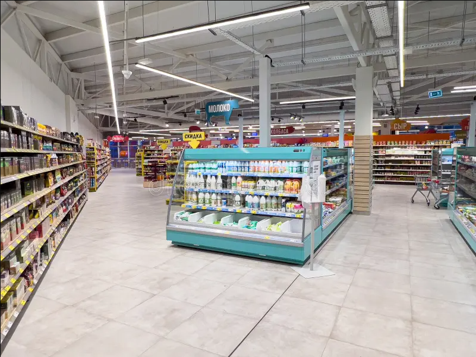

Sobre nosotros

¿Quiénes somos?
Somos Bellaner Market, un supermercado creado con el propósito de ofrecer a nuestros clientes una gran variedad de productos para sus necesidades diarias. Contamos con diferentes categorías como alimentos, bebidas, productos lácteos, frutas, verduras, carnes y snacks.
Nos esforzamos por ofrecer productos de buena calidad, precios accesibles y un servicio amable, buscando que cada cliente tenga una experiencia de compra cómoda, rápida y agradable.
Nuestra misión
Nuestra misión es ofrecer productos de calidad y variedad a precios accesibles, brindando una atención amable y responsable a todos nuestros clientes. Buscamos satisfacer las necesidades de las familias, manteniendo un ambiente agradable y organizado donde las personas puedan encontrar fácilmente todo lo que necesitan para su hogar.
Además, trabajamos constantemente para mejorar nuestro servicio y generar confianza en cada compra.
Nuestra visión
Nuestra visión es convertirnos en un supermercado reconocido por la calidad de nuestros productos, nuestros buenos precios y la atención que ofrecemos a nuestros clientes. Queremos crecer de manera responsable y seguir ampliando nuestra variedad de productos, manteniendo siempre el compromiso con las familias y la comunidad.
Buscamos que Bellaner Market sea un lugar confiable al que nuestros clientes quieran regresar.